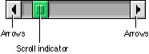

Scroll Bars
Scroll bars allow users to view areas of a document or a list that is larger than can fit into the current window. A scroll bar is a shaded gray rectangle that has a black arrow in a box at each end. Inside the gray area is an indicator (also known as a "scroll box") which indicates the relative position of the currently visible portion of the content being scrolled.The appearance of scroll bars has been updated for platinum appearance. Scroll arrows are now solid black when active. The scroll indicator takes the color set by the user through the Appearance control panel. Figure 2-26 shows the new appearance of scroll bars.
Figure 2-26 A horizontal scroll bar

You can use scroll bars with windows as well as with scrolling lists. For more information on the use of scroll bars with windows, see "Windows" in Macintosh Human Interface Guidelines.
Make sure that you don't use a scroll bar when you really should use a slider. Use scroll bars only for representing the relative position of the visible portion of a document and in scrolling lists. Typically a scroll bar represents the amount of data in a document, while the scroll indicator represents the relative position of the window over the length of the document. Using a scroll bar to change a setting confuses the meaning of the element and makes the interface inconsistent. For more information on using sliders, see "Sliders and Tick Marks" (page 31).